8/19/2022 Today I designed the title and subtitle of the website. This week, I started going to CV high school
8/22/2022 I added color and the clam chowder recipe to my website
8/23/2022 I added the capybara and toucan photo, and made the website green.
8/24/2022 The website went LIVE! The whole world can see my blog now. Now we wait for the paparazzi to show up
9/2/2022 This week was a great week in engineering. We learned about the 5 simple machines. We started a new project; making a rubegoldberg machine pop a balloon with 3 different simple machines. We have to design the whole thing in scale on tinkercad, which is a little tedious, but it'll still be abunch of fun. This weeks challenge day was designing an appliance in tinkercad as close as possible to a website image. I was selected to be a judge for the right half of the classroom, so I did not do the project. It was a lot of fun judging people and walking around. People got reall compeptive, and one person--who will remain nameless--even tried to bribe me with real money. The prizes were a kitkat for 1st and 2nd place, and a SIGNED band-aid by Mr. Poole and the judges. It was one of my favourite days in engineering class. Today we are going to do as much of the rubegoldberg machine as possible. I have many ideas to make the project work, and we will see next week if they do in fact work.
9/5/22-9/8/22 This week we worked on the rubegoldberg machine. On tuesday we worked on our personal one, which I finished that day, and on wednesday, we worked on the group one. The group one is 4 people where we take the best parts of all of our machines and combine them to create one big one. We finished that on wednesday. My group mates are Elio, Christian, and cristian. Today we have a sub in the class, so I think we might not do much work, and we have the challenge day tommow.
9/12/22-9/16/22 This week we worked on the rubegoldberg machine. Weused actual cardboard and spent a lot of time cutting and mesuring. It is really coming together, and should be done in a couple of days. The challenge day was making a paperboat with 1 sheet of paper that can hold as much weight as possible in 5 minutes without sinking. My group just made a basic paper boat and put a bunch of marbels, but we made it for 5 minutes. Water was already in our boat at the end, but it still worked. Below is a pdf of the challenge worksheet for more info
9/19/22-9/23/22 This week we finished the rube goldberg machine. We got our project to work very consistently. It is now finished. I have attacthed photos of my original tinkercad idea, the group tinkercad, and a photo and video of the real life rube goldberg machine. We competed and our project only worked the second time. It worked every single time except for the one we competed with. It was a very good project and we finished it very quickly so we had a lot of extra time.
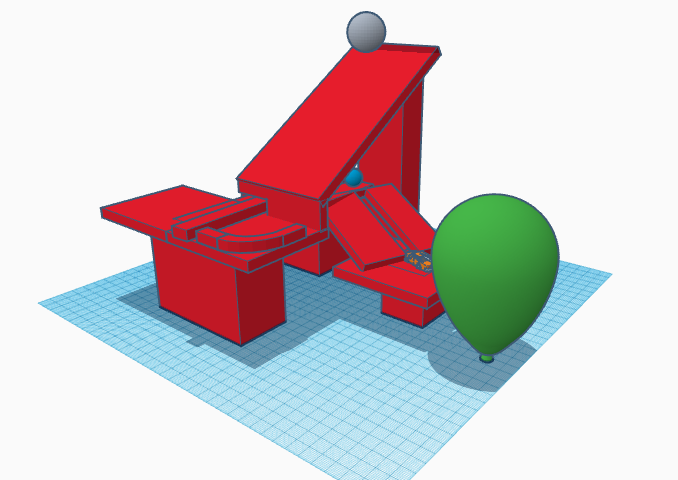 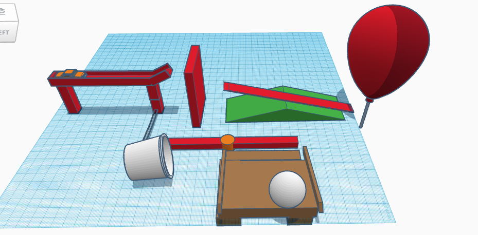 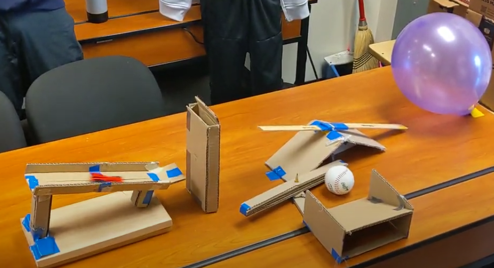
9/25/22-9/30/22 This week we worked on a bioengineering project. Mr. Pool got covid this week so we had subs the whole time. We made a tinkercad for an animal prosthetic. I made mine off of a bird. I made a bird leg. I have attatched a photo. I also added a funny video for you to watch 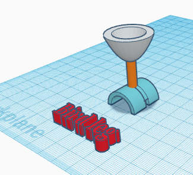
10/3/22-10/7/22
This week we dissected computers. Me and a partner unscrewed and took out every component in the computer. There was so much stuff in there like hard drive, CPU, Heat sink, and much more. I learned what all of the components do in the computer and how they work together (computer architecture) It was a lof of fun. I have attatched a photo of the process

10/10/22-10/14/22 This week we started our areospace engineering lesson. We learned the basics of areodynamics and how things fly like drag, lift, wieght, and thrust. We started a Tinker Cad for a bottle rocket project we will do where we have to launch a bottle rocket from an air pump and make it go as far as possible. I really like areospace engineering and it is one of my top 4 favourites. I hope in the future we do chemical or nuclear engineering, and especially nautical. We also got our grades for the class today and I have a good grade right now so I am good.
10/17/22-10/21/22 This week we made our bottle rockets. Me and my partners designed it on tinkercad, then built it. We had to use a 2 liter bottle of soda and make it launch up and as far as possible from a pump that pressurizes water inside the bottle. My group wrapped it with construction paper and added cardboard wings and small bottom wings, as well as a cone on the front. We moldeld it after a missle to make it go as far as possible. It took about 4 tries to get it to launch, but when it did, it went backwards. Most peoples didn't go farther than 8 feet in front of them, so I didn't feel too bad. I attatched a photo of the tinkercad design, the BOM (build of materials), the actual rocket, and a video of its launch. I liked this project and thought it was fun, and I hope we do more hands on stuff in the future. 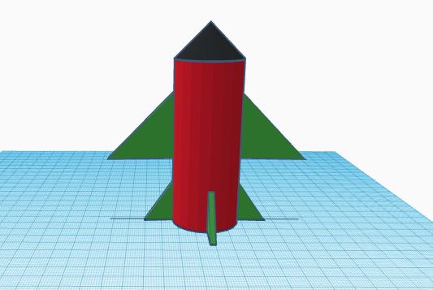 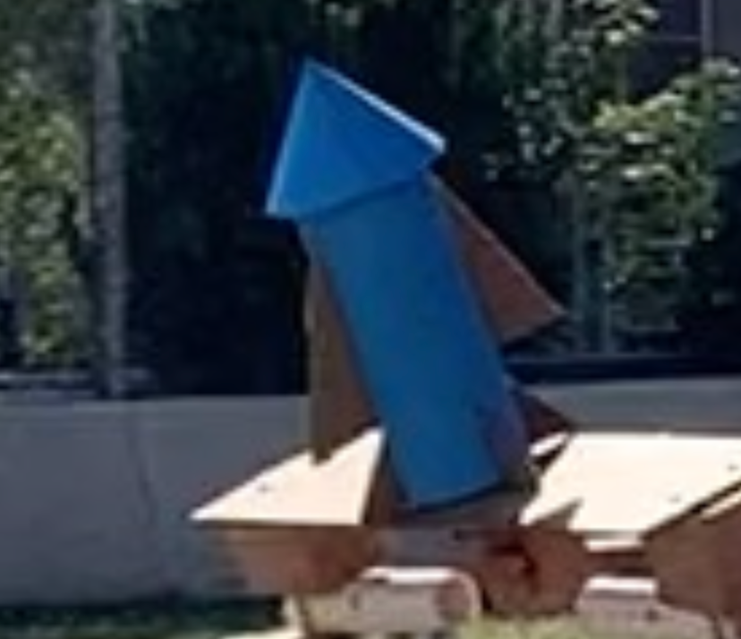 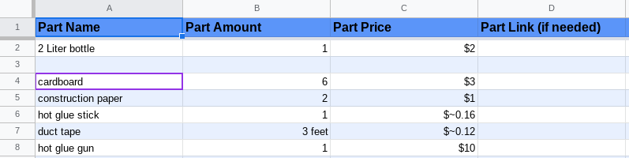
10/31/22-11/4/22 This week we started electrical engineering. We learned how to use bread boards. We learned about Ohms law, resistance, current, and voltage. We learned the formula for calculating voltage, V=IR, and tinkercaded some circuits. I have attatched photos of the circuits we made 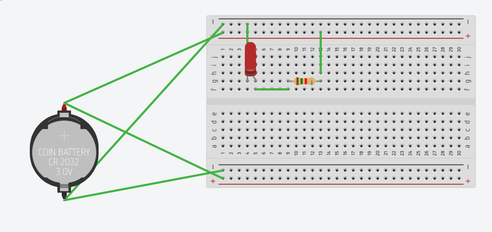 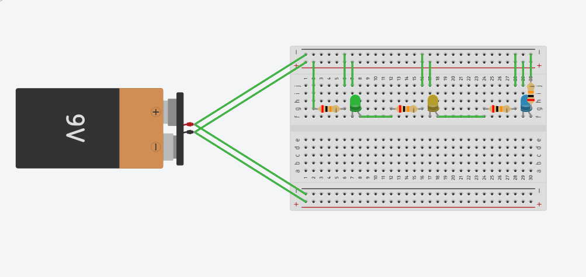 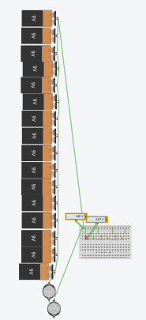 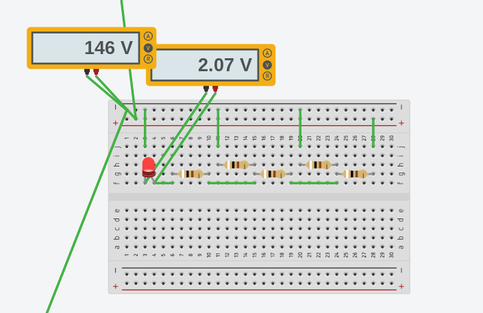
11/7/22-11/10/22 This week we did circuts on real bread boards. It was so cool to actually see the light turn on in real life. I learned how to use a multimeter in real life. Our circuits were powered by something called an arduino. This can power our circuits from our computer. We got to make series and parrallel ciurcuits in real life. I have attacthed photos of our cicuits.
11/13//22-11/18/22
This week we finished the breadboard circut unit. We learned how to code the arduino and power the lights for certain amounts of time. This is how we were able to make lights turn on for a second and turn back on. I have attatched photos of the code and videos of the breadboard with the patterend lights. This was a lot of fun to make and now I understand how led circuits work. Over thanksgiving break my sister is coming home so I am going to be spending time with her before she has to go back to college. We will have a friendsgiving and it will be a lot of fun. Our challenge day this week was to figure out how to save a lake of drinking water from carcinogens. I have attatched the worksheet for it.